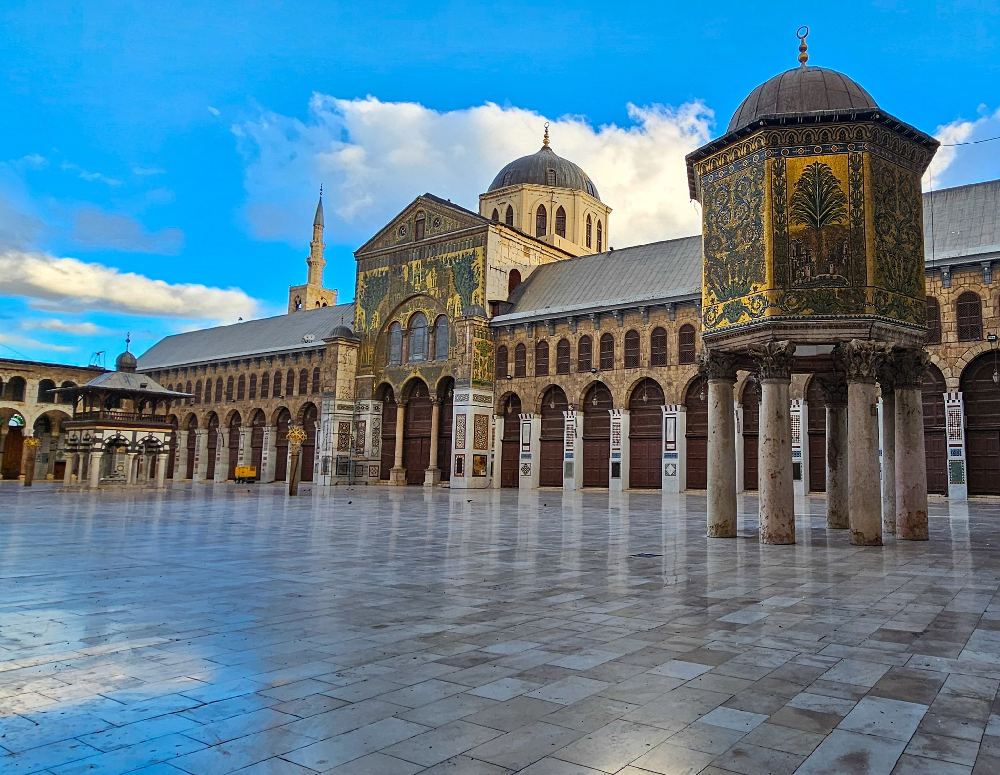
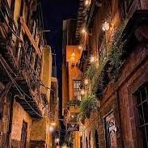
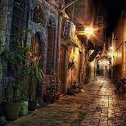
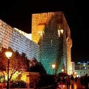

Welcome to Syria !

Al_Sham
One of the oldest continuously inhabited cities in the world, known for its ancient souks and historic architecture.

Palmyra
An ancient city with breathtaking ruins, reflecting Syria's rich historical legacy.

Aleppo
Famous for its historic citadel and vibrant culture.